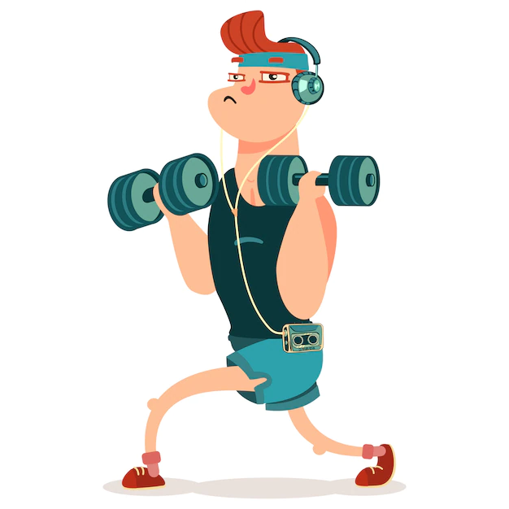
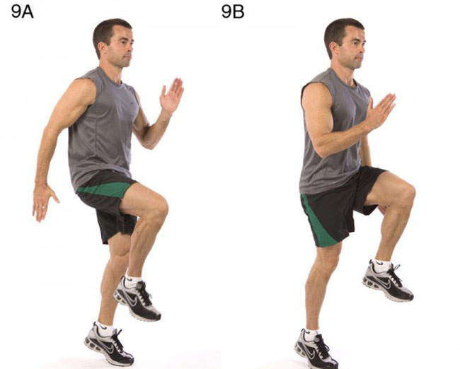
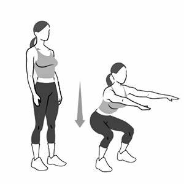
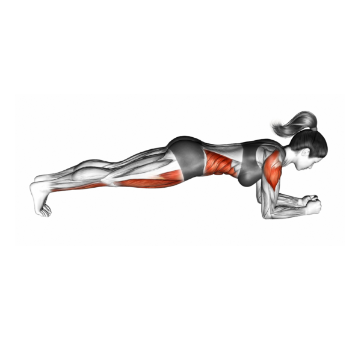
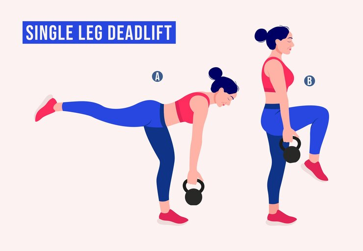
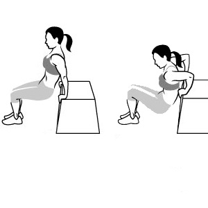
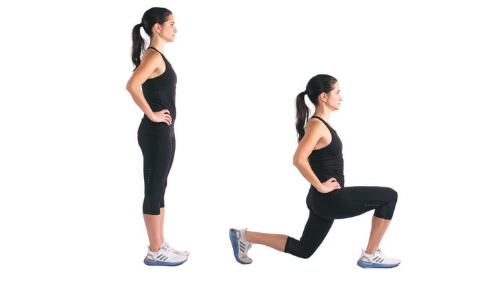
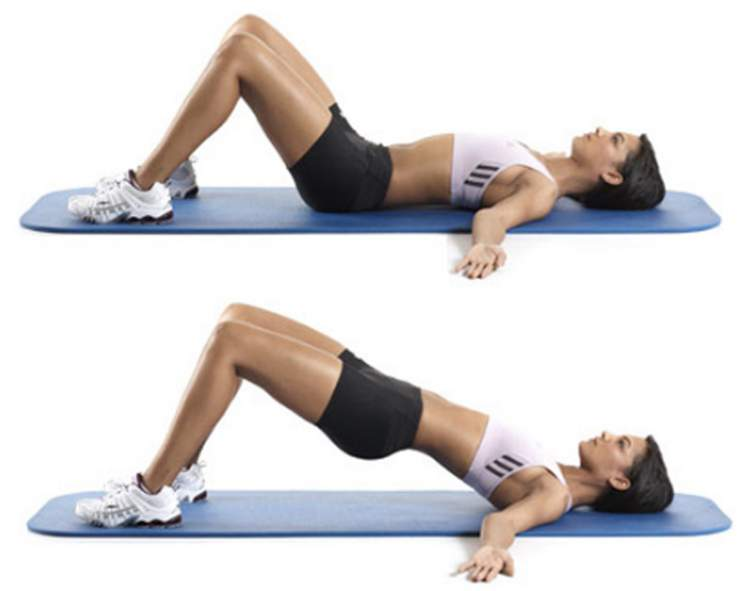
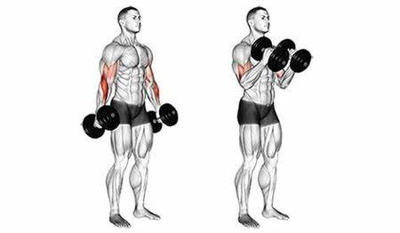

8 Exercícios Essenciais para Transformar seu Corpo em casa!

Seja bem-vindo a um mundo de saúde e condicionamento físico transformadores! Aqui, você verá 8 exercícios essenciais, selecionados para melhorar sua força, flexibilidade e vitalidade. Esses movimentos servirão como guia estratégico para trabalhar todo o corpo. Comece então a sua jornada em direção a um "eu" mais saudável, forte e confiante explorando esses exercícios!
Aquecer antes do treino!
A corrida no lugar é um aquecimento eficaz para preparar os músculos e elevar a frequência cardíaca antes do treino. Para fazê-la:
- 1. Fique em pé com os pés na largura dos quadris e os braços ao lado do corpo;
- 2. Levante um joelho em direção ao peito enquanto balança o braço oposto para cima;
- 3. Alterne os pés continuamente, mantendo um ritmo constante;
- 4. Mantenha uma postura ereta, respire profundamente e execute por 1 a 2 minutos como parte do aquecimento.

exercícios:
Duração do exercício: 30-40 minutos.
Intervalo entre os exercícios: 30-60 segundos.
Número de séries: 3-4 séries de cada exercício.
Número de repetições: 8-12 repetições por série (ajuste a intensidade conforme necessário).
1. Agachamento:
Objetivo: Trabalhar os músculos das pernas e glúteos.

Execução: Fique em pé, com os pés na largura dos quadris.
Agache-se, mantendo os joelhos alinhados com os pés e o peso nos calcanhares.
Mantenha as costas retas e o peito erguido.
Retorne à posição inicial empurrando pelos calcanhares.
2. Flexões:
Objetivo: Trabalhar peito, tríceps e ombros usando o peso corporal.

Execução: Fique em uma posição de prancha alta, com as mãos colocadas um pouco mais largas do que a largura dos ombros, e os pés juntos.
Abaixe o corpo lentamente, dobrando os cotovelos, até que o peito quase toque o chão.
Empurre o corpo de volta à posição inicial, estendendo os braços completamente.
3. Prancha:
Objetivo: Fortalecer o core (abdômen e lombar).

Execução: Coloque-se em uma posição de flexão, mas apoiando o peso nos antebraços em vez das mãos.
Mantenha o corpo reto dos pés à cabeça, ativando os músculos do core.
Segure a posição por um tempo desafiador, mantendo a respiração constante.
Inicialmente, tente manter a prancha por 20-30 segundos e vá aumentando gradualmente.
4. Levantamento Terra com Uma Perna:
Objetivo: fortalecer os músculos das costas, glúteos e pernas.

Execução: Fique em pé com os pés ligeiramente afastados.
Escolha uma perna para levantar e flexione ligeiramente o joelho da perna oposta.
Segure o peso com a mão oposta à perna levantada, deixando-o pendurado na frente da coxa.
Incline-se para a frente na cintura, estendendo a perna levantada atrás de você e abaixando o peso em direção ao chão.
Volte à posição inicial, contraindo os músculos das costas e glúteos para se levantar.
Realize algumas repetições e, em seguida, troque de perna.
5. Tríceps na Cadeira:
Objetivo: fortalecer os tríceps e ombro.

Execução: Use uma cadeira resistente ou um banco. Coloque as mãos na borda da cadeira, com os dedos voltados para a frente. Abaixe o corpo dobrando os cotovelos e depois empurre o corpo de volta à posição inicial.
6. Avanço Alternado:
Objetivo: Trabalhar as pernas e glúteos.

Execução: Use uma cadeira resistente ou um banco. Coloque as mãos na borda da cadeira, com os dedos voltados para a frente. Abaixe o corpo dobrando os cotovelos e depois empurre o corpo de volta à posição inicial.
7. Elevação de Pelve:
Objetivo: Trabalhar glúteos e parte inferior das costas.

Execução: Deite-se de costas com os joelhos dobrados e os pés no chão.
Eleve os quadris em direção ao teto, contraindo os glúteos.
Mantenha a posição por um momento e retorne à posição inicial.
8. Rosca Martelo com Peso (garrafas de água):
Objetivo: Trabalhar os bíceps usando peso (garrafas de água) como resistência.

Execução: Fique em pé, segurando uma garrafa de água em cada mão, com as palmas voltadas uma para a outra (pegada neutra) e os braços estendidos ao lado do corpo.
Dobre os cotovelos e levante as garrafas em direção aos ombros, mantendo os cotovelos junto ao corpo.
Abaixe as garrafas de volta à posição inicial, estendendo os braços.
Bônus!
Você está em busca de uma maneira de elevar sua rotina de exercícios em casa para um nível totalmente novo?
Se sim, temos algo incrível para você! Com esse Ebook de receitas saudáveis e deliciosas, projetado para maximizar
seus resultados de fitness e realçar sua beleza natural. Alimentação inteligente, nutrição para pele e corpo,
energia sustentada para treinos e variedade de pratos. Não perca a chance de transformar sua jornada de saúde e beleza.
Clique aqui! e adquira agora. Seu corpo e mente agradecerão por esse investimento em si mesmo(a)!